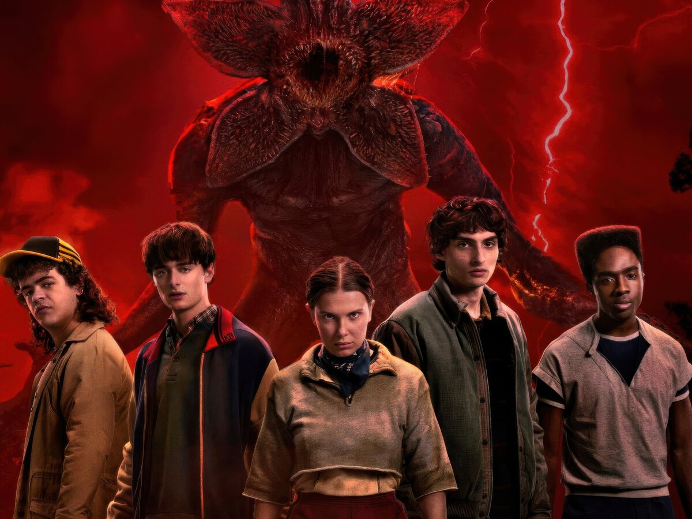
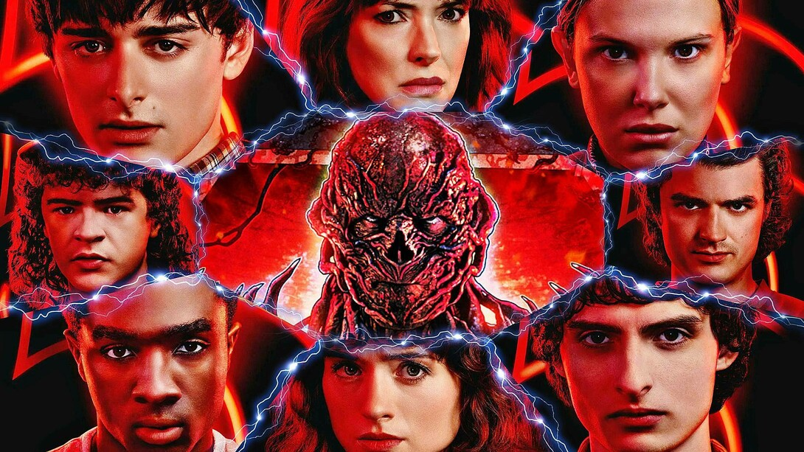

Eleven
Niña con poderes telequinéticos que escapó de un laboratorio. Es el corazón del grupo y clave para enfrentar al Upside Down.
Misterio y ciencia ficción en el pueblo de Hawkins
Stranger Things está ambientada en los años 80 en el pueblo de
Hawkins. Todo comienza cuando un niño llamado Will desaparece de forma misteriosa
y sus amigos empiezan a buscarlo.
Durante la búsqueda conocen a una niña con poderes llamada
Eleven y descubren experimentos secretos y una dimensión oscura
conocida como el Mundo del Revés (Upside Down).


Niña con poderes telequinéticos que escapó de un laboratorio. Es el corazón del grupo y clave para enfrentar al Upside Down.
Amigo de Will y uno de los líderes del grupo. Siempre busca proteger a sus amigos.
El amigo divertido e inteligente del grupo. Aporta humor y buenas ideas en los momentos difíciles.
Amigo valiente y realista. Suele mantener los pies en la tierra cuando las cosas se complican.
El niño cuya desaparición inicia toda la historia. Su conexión con el Upside Down marca la serie.
Chica nueva en Hawkins, decidida y ruda. Con el tiempo se vuelve parte importante del grupo.